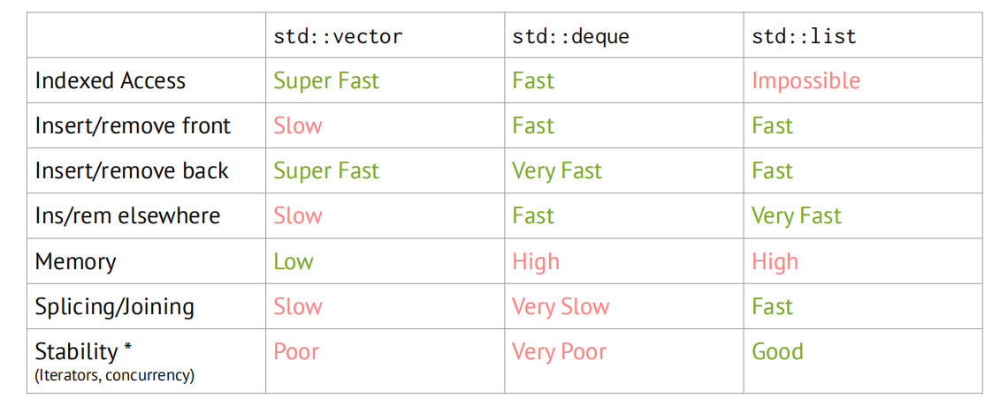

CS106L_note1
CS106L_note1
Lecture2: Types and Structs
Types
size_t 是 C++ 中专门用来表示对象大小、元素数量和下标的一种无符号整数类型。
C++ is a Static-Typed language
Overloading
1 | double func(int x) { // (1) |
Structs
A struct is a group of named variables (each with their own type)
1 | Student s = {“Ethan”, “CA”, 30}; |
Pairs & Tuples
A pair is a struct with two fields.
1 | int main() { |
std::pair is a template. You can use any type inside it; type goes in the <>
A tuple is a struct with lots of fields.
1 | int main() { |
std::tuple is uncommon. We won’t use it much in future lectures.
(Datatypes like std::vector are generally more useful.)
Auto
1 | // What types are these? |
auto does not mean that the variable doesn’t have a type.
It means that the type is deduced by the compiler.
1 | auto wrong() { // this won’t work |
auto 最初主要用于变量类型推导，不能随便拿来代替函数返回值和函数参数类型。
C11 中不合法，但是目前 C14 中编译器会自动推导出第一段程序返回 int，C++20 也已经支持 auto 参数
Structured Binding
Structured binding lets you initialize directly from the contents of a struct
1 | // before |
Lecture 3: Initialization and References
Uniform Initialization
Initialization is how we provide initial values to variables
Uniform initialization provides a way for us to use brackets to initialize anything succinctly
1 | \\ BEFORE |
1 | int n = 3; |
1 | std::initializer_list<int> list_init{3, 5}; // before C++17 type is std::initializer_list |
References
1 | int doubleValue(int& x) { |
1 | vector<int> original{1, 2}; |
想要把 Course 的 time 加 1h
1 | struct Course { |
buggy：
1 | void shift(vector<Course>& courses) { |
1 | void shift(vector<Course>& courses) { |
fixed:
1 | void shift(vector<Course>& courses) { |
1 | void shift(vector<Course>& courses) { |
reference 就是一个别称，用来指代需要指代的对象，能借此改变指代对象但不 copy。
Const and Const References
buggy:
1 | const std::vector<int> c_vec{7, 8}; // a const variable |
1 | std::vector<int> vec{1, 2, 3}; |
Need to explicitly specify const and & with auto
1 | std::vector<int> vec{1, 2, 3}; |
const reference 能够 reference 一个量，但是不能通过它来改变你 reference 的对象。且如果对象改变了，const reference 表示的值也会改变。
Lecture 4: Streams
Streams
A stream is an abstraction for input/output
Streams convert between the string representation of data and the data itself.
Idea: both input and output are strings; need to do computation on object representation
Types of Streams
Output Streams
1 | std::cout << 5 << std::endl; // prints 5 to the console |
Input Streams
1 | // input: 5 abc 7 |
-
>> reads up to the next whitespace character and does not go past that whitespace character.
-
getline reads up to the next delimiter (by default, ‘\n’), and does go past that delimiter.
Additional Stream Methods
1 | input.get(ch); // reads a single char |
Stringstreams
1 | std::string input = “5 seventy 2”; |
Stream Internals
Buffering
Accumulate characters in a temporary buffer. When full, write entire buffer to output. (for accelerate)
1 | stream << std::flush; // flush what we have so far |
State Bits
- Good bit: whether ready for read/write
- Fail bit: previous operation failed, future operations froze
- EOF bit: previous operation reached end of file
- Bad bit: external integrity error
1 | // here’s a very common read loop: |
Chaining
>> and << are actually functions!
1 | std::ostream& operator<<(std::ostream& out, const std::string& s); |
chaining 的过程：
1 | // cout << "test" << 5 |
Lecture 5: Containers
Sequence Containers
std::vector
内部结构可以简要理解为：
1 | template <typename T> |
当容量不够时，如果还需要 push_back ，则会执行：
- 申请一块更大的连续内存
- 把旧元素移动/拷贝过去
- 销毁旧元素
- 释放旧内存
- 加入新元素
std::deque
1 | deq.push_front(); |
内部结构：多块连续内存 + 一层索引结构，而不是像 vector 是一段连续内存
std::list
like std::stack + std::queue , provides fast insertion, but can’t randomly index into it fastly.
1 | std::list<int> list{5, 6}; // {5, 6} |
Comparison

-
vector: use for most purposes
-
deque: frequent insert/remove at front
-
list: very rarely - if need splitting/joining
Container Adaptors
std::stack and std::queue
A wrapper for an object changes how external users can interact with that object.
std::stack 和 std::queue 可以理解为一种 container adapter，内部的 container 是 std::deque
Associative Containers
map & set
unordered_map & unordered_set
multimap, multiset
Lecture 6: Iterators
Iterators
Iterators allow iteration over any container whether ordered or unordered
iterators 就像是 claw ，能够以一定顺序抓取 container 中的元素
1 | std::map<int, int> map {{1, 2}, {3, 4}}; |
1 | auto key = (*iter).first; |